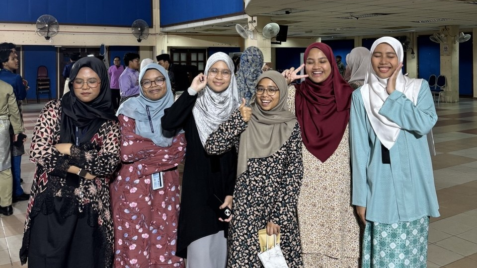
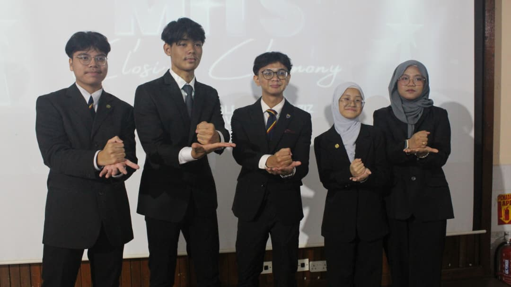
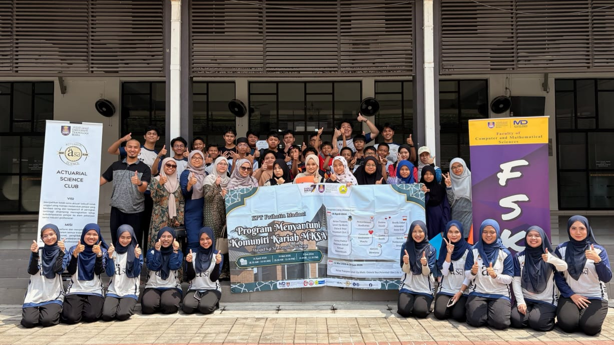
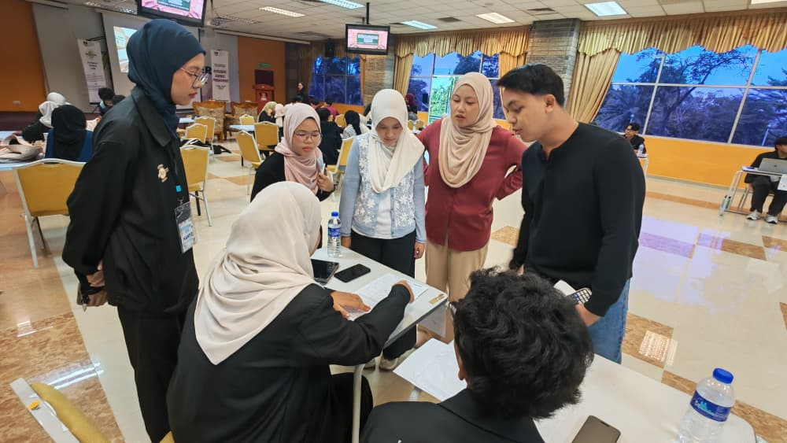

NGO involvement
Fundraising & Sponsorship Officer · Solidariti Pendidikan
Role summary
- Support efforts to secure partnerships, sponsorships and funding for educational initiatives.
- Identify potential sponsors and collaborators, develop sponsorship proposals and maintain external stakeholder relationships.
- Work with internal teams to align fundraising strategies, campaign planning and programme sustainability.
- Develop relationship management, stakeholder engagement, strategic communication, proposal-writing and fundraising skills.
Moments



